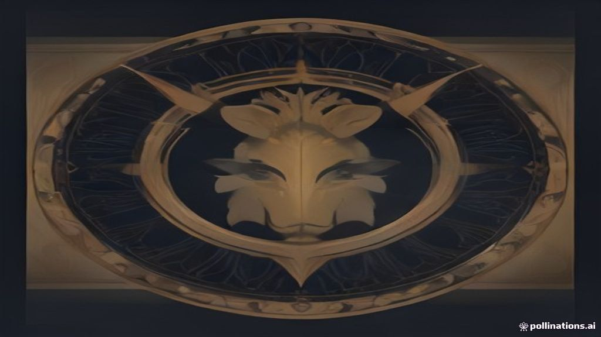

Pre-Market Brief — 09 October 2026
TL;DR
- Global markets presented a mixed picture overnight, with US indices largely negative, while European and some Asian markets saw mild gains.
- GIFT Nifty is signalling a strong positive opening for the Indian benchmark Nifty 50, pointing to a potential gap-up.
- Foreign Institutional Investors (FIIs) remained significant net sellers for the fifth consecutive session, while Domestic Institutional Investors (DIIs) continued to provide strong buying support.
- Concerns about rising US 10-year Treasury yields persist, with one expert projecting a potential rise to 6%, which could impact global capital flows.
- For Nifty, the 22500 level appears to be a crucial support zone, while 22700 and 23000 could act as immediate resistance levels.
- The continued outflow by FIIs, coupled with global interest rate and inflation concerns, remains the primary risk factor for the Indian market today.
How global markets traded — and what it means for India
Global markets traded with a mixed sentiment overnight. US indices, particularly the Nasdaq and S&P 500, closed lower, reflecting some caution among investors. In contrast, European markets saw a rebound, supported by easing oil prices and retreating bond yields. Asian markets were also mixed, with Hong Kong's Hang Seng showing strong gains while Japan's Nikkei saw a marginal dip. This mixed global tone, combined with a strong positive signal from GIFT Nifty, suggests a potentially positive but cautious opening for Indian equities.
| Index | Value | % Change |
|---|---|---|
| Dow Jones | 51231.64 | +0.10% |
| Nasdaq | 27193.34 | -1.25% |
| S&P 500 | 7765.36 | -0.47% |
| FTSE 100 | 10526.91 | +0.82% |
| Nikkei 225 | 69030.92 | -0.02% |
| Hang Seng | 24211.35 | +1.79% |
| Shanghai | 3813.79 | +0.05% |
Interpretation: The mixed global cues, with a notable rebound in European markets and strong gains in Hong Kong, suggest a cautiously optimistic start for Indian markets. The negative close in US tech-heavy Nasdaq might temper enthusiasm for IT stocks, but the overall sentiment could lean positive given the GIFT Nifty's strong signal.
Currency, commodities and yields
The Indian Rupee (USD/INR) strengthened marginally against the US Dollar, closing at ₹96.68, a -0.08% change. The Dollar Index also saw a slight dip of -0.06% to 102.08, indicating a minor softening of the greenback globally. Crude oil prices eased, with Brent Crude down -1.18% to $103.05 and WTI Crude falling -0.97% to $90.60. Gold and Silver both saw significant gains, with Gold up +1.31% to $4211.60 and Silver up +2.58% to $60.59, suggesting a flight to safety or increased inflation hedging. The US 10-Year Treasury Yield retreated by -0.87% to 5.23%, providing some relief to global bond markets, though concerns about its potential rise to 6% persist.
Interpretation: A stronger Rupee is generally positive for the economy, reducing import costs and potentially benefiting companies with foreign currency debt. Easing crude oil prices are a significant positive for India, which is a major oil importer, potentially reducing inflation pressures and benefiting sectors like aviation, paints, and oil marketing companies (OMCs). The rise in gold and silver indicates some global uncertainty or inflation expectations. While the US 10-year yield saw a slight dip, the underlying concern about its potential rise to 6% could keep FIIs cautious and impact capital flows into emerging markets like India.
GIFT Nifty — what it's signalling
The GIFT Nifty is currently trading at 22623.50, up by +1.16%. This indicates a significant positive bias for the Indian Nifty 50 index at the open, pointing towards a potential gap-up.
Interpretation: The strong positive performance of GIFT Nifty suggests that Indian markets are likely to open with a notable gap-up today, reflecting positive sentiment from overnight global developments and possibly some domestic factors.
FII/DII flows — who's driving the tape
Foreign Institutional Investors (FIIs) remained net sellers in the Indian cash equity segment yesterday, offloading shares worth ₹12,944 crore. Domestic Institutional Investors (DIIs), on the other hand, continued to provide strong support, buying equities worth ₹10,703 crore. This trend of FII selling being largely absorbed by DII buying has been consistent over the last five sessions.
| Date | FII Net (₹ crore) | DII Net (₹ crore) |
|---|---|---|
| 2026-10-08 | -12,944 | +10,703 |
| 2026-10-07 | -6,121 | +4,597 |
| 2026-10-06 | -2,961 | +5,089 |
| 2026-10-05 | -4,699 | +5,182 |
| 2026-10-01 | -9,484 | +10,042 |
Interpretation: The persistent and significant selling by FIIs indicates a cautious stance by foreign investors, possibly due to global factors like rising US yields or geopolitical concerns. However, the consistent and robust buying by DIIs has been crucial in preventing a sharper market correction, acting as a strong domestic counter-balance and providing a floor to the market. For today, the market direction will heavily depend on whether DII buying can continue to absorb FII outflows, especially if the selling intensifies.
Key levels to watch — Nifty, Bank Nifty & Sensex (technical)
| Index | Prev Close | CPR Pivot | CPR Top | CPR Bottom | R1 | R2 | S1 | S2 | Swing High | Swing Low | 20-DMA | 50-DMA |
|---|---|---|---|---|---|---|---|---|---|---|---|---|
| NIFTY 50 | 22568.55 | 22481.35 | 22524.95 | 22437.75 | 22667.95 | 22767.35 | 22381.95 | 22195.35 | 23489.0 | 22179.9 | 22974.84 | 23727.43 |
| BANK NIFTY | 55385.75 | 55140.75 | 55263.25 | 55018.25 | 55664.3 | 55942.85 | 54862.2 | 54338.65 | 56671.1 | 53785.7 | 55522.42 | 56706.35 |
| SENSEX | 72640.15 | 72349.61 | 72494.88 | 72204.35 | 72959.74 | 73279.32 | 72030.03 | 71419.9 | 75038.93 | 71292.88 | 73517.0 | 75869.62 |
Interpretation: The CPR width for Nifty (0.39%), Bank Nifty (0.44%), and Sensex (0.4%) is relatively narrow, suggesting that a trending day might be more likely than a range-bound one. For Nifty, a break above R1 (22667.95) could signal further upside towards R2 (22767.35), while a break below S1 (22381.95) could indicate weakness towards S2 (22195.35). The 20-DMA and 50-DMA for all indices are currently above their previous closing prices, indicating a short-to-medium term downtrend or consolidation. A move above the 20-DMA would be a positive signal.
Option-chain signals (OI) — where support & resistance sit
NIFTY:
- Highest CALL OI (resistance): 23000 (15,726,880 contracts), 22700 (13,826,865 contracts), 22600 (13,618,475 contracts)
- Highest PUT OI (support): 22500 (19,567,015 contracts), 22400 (17,834,570 contracts), 22300 (15,552,615 contracts)
- PCR: 1.1
BANK NIFTY:
- Highest CALL OI (resistance): 56000 (1,197,720 contracts), 55000 (965,250 contracts), 56500 (863,070 contracts)
- Highest PUT OI (support): 55000 (1,354,590 contracts), 54000 (795,990 contracts), 55500 (673,050 contracts)
- PCR: 0.98
SENSEX:
- Highest CALL OI (resistance): 72500 (615,240 contracts), 74000 (559,180 contracts), 73000 (519,760 contracts)
- Highest PUT OI (support): 72000 (1,091,840 contracts), 71500 (875,700 contracts), 72500 (815,240 contracts)
- PCR: 1.28
Interpretation: For Nifty, the highest Put OI at 22500 suggests strong buying interest and acts as a crucial immediate floor, while significant Call OI at 22700 and 23000 indicates that sellers expect the market to face resistance at these levels. A Nifty PCR of 1.1 leans towards a supportive or bullish-to-neutral sentiment. For Bank Nifty, the highest Put OI at 55000 suggests strong support, while 56000 and 55000 (also a put support) are key resistance levels from Call OI. A Bank Nifty PCR of 0.98 is neutral to slightly cautious. Sensex shows strong Put OI at 72000 and 71500 as support, with Call OI at 72500 and 74000 as resistance, and a PCR of 1.28 indicates a supportive bias. Combining with technicals, Nifty's 22500-22700 range will be critical to respect today.
Companies reporting results today
No Nifty 500 / large-cap results scheduled today.
Corporate actions today
- TCI: The company has a Buy Back ex-date today. This means shares bought today will not be eligible for the buyback offer.
- SKYWAYS: The stock will trade ex-dividend for an Interim Dividend of Re 0.25 per share. The share price will typically adjust downwards by the dividend amount at market open.
- MOLDTECH: The company has announced a Bonus Issue in the ratio of 1:1. This means for every one share held, shareholders will receive one additional share. The share price will adjust accordingly on the ex-date.
- ACCELYA: The stock will trade ex-dividend for a Dividend of ₹35 per share. The share price will typically adjust downwards by the dividend amount at market open.
- MOLDTKPAC: The company has announced a Bonus Issue in the ratio of 1:1. Similar to MOLDTECH, the share price will adjust on the ex-date.
- 706GS2046: This bond or security has an Interest Payment ex-date today, meaning holders as of yesterday will receive the interest payment.
Stock & sector news that matters
- European stocks rebound as oil prices ease; telecom shares slide on SpaceX deal
- SEPC shares jump 11% after SAIL deal; order book crosses ₹10,000 crore
- US 10-year Treasury yield could hit 6% as oil prices, debt worries mount: Pimco CIO
- IT stocks ignored Donald Trump’s PERM suspension to gain ₹70,000 crore in one day
- Vedanta shares jump over 3% after ₹5 interim dividend announcement
- Inox Green Energy Services share price jumps 15% after acquisition update
European markets saw a recovery as oil prices softened and bond yields retreated, easing concerns about inflation and geopolitical tensions. However, telecom stocks faced pressure after SpaceX's spectrum deal raised competitive worries. Why it matters: Easing oil prices are a positive for Indian companies that rely on crude imports, such as OMCs, paint manufacturers, and aviation. The telecom sector in India might watch global developments for any ripple effects from the SpaceX deal, though direct impact may be limited.
SEPC shares surged nearly 11% after securing an ₹854.57-crore contract from SAIL for its IISCO Steel Plant expansion. This deal significantly boosts SEPC's consolidated order book to over ₹10,000 crore. Why it matters: This is a significant positive for SEPC, indicating strong order book visibility and potential for future revenue growth. It could also provide a sentiment boost for other companies in the infrastructure and capital goods sectors.
Pimco's Dan Ivascyn warned that the 10-year US Treasury yield could reach 6% for the first time since 2000, citing rising oil prices, inflation concerns, and mounting government debt. Why it matters: A sustained rise in US Treasury yields makes US assets more attractive, potentially leading to increased FII outflows from emerging markets like India. This could put pressure on Indian equities and the Rupee.
Indian IT stocks rallied up to 4%, adding ₹70,000 crore in market capitalisation, despite the US suspending a labour certification programme. Strong Q2 results from TCS and easing oil prices were cited as reasons for the rally. Why it matters: This indicates resilience in the Indian IT sector, driven by strong earnings and other positive factors outweighing negative news. It suggests that the market is focusing on fundamentals and broader economic tailwinds for the sector.
Vedanta shares rose after the mining major announced its first interim dividend of ₹5 per share for FY27, amounting to a total payout of ₹1,955 crore. Why it matters: This dividend announcement is a positive for Vedanta shareholders and could attract investor interest in the stock. It also highlights the company's commitment to returning capital to shareholders.
Inox Green Energy Services saw its share price jump by about 15% following an acquisition update. Why it matters: This is a significant positive for Inox Green Energy Services, indicating investor confidence in its growth strategy and potential for expansion through acquisitions.
Events & data to watch — and how markets usually react
- Global Interest Rate Outlook (US 10Y Yield concerns): The ongoing discussion around the potential for the US 10-year Treasury yield to hit 6% will be closely watched. Markets typically react with caution to rising global interest rates, as it can lead to FII outflows from emerging markets and increase borrowing costs.
- Singapore Monetary Policy (October 14): Singapore's central bank is expected to tighten monetary policy next week. While not directly impacting India, such moves in regional economies can sometimes signal broader trends in global monetary policy and investor sentiment towards Asian markets.
- RBI Rate Cuts Outlook: The recent commentary suggesting no near-term RBI rate cuts will keep banking stocks in focus. Markets generally react to central bank stances, with a hawkish outlook potentially impacting interest-rate sensitive sectors.
- Asian Paints Q2 Results (October 29): While not today, the upcoming board meeting for Asian Paints' Q2 results and potential interim dividend will be on investors' radar. Large-cap results can set the mood for their respective sectors.
What to watch in today's session
- GIFT Nifty's positive bias: Monitor if the Indian indices can sustain the gap-up opening indicated by GIFT Nifty.
- FII/DII flow dynamics: Observe if FII selling continues and if DII buying remains robust enough to absorb the outflows.
- Nifty's key levels: Watch how Nifty trades around the 22500 Put OI support and the 22700/23000 Call OI resistance levels. A break above R1 (22667.95) or below S1 (22381.95) could dictate intraday direction.
- Crude oil prices: Any further easing in Brent and WTI crude prices would be a positive for Indian markets.
- US 10-Year Yield movement: While it softened yesterday, any renewed upward pressure on the US 10-year yield could trigger FII selling.
- Sectoral action: Keep an eye on IT stocks, given their recent rally despite US news, and defence stocks, which have seen significant gains.
Bottom line
Indian markets are poised for a positive start, largely driven by a strong GIFT Nifty signal and some relief from easing crude oil prices. However, the persistent selling by FIIs and lingering concerns about global interest rates, particularly the US 10-year yield, will likely keep investors cautious. The 22500-22700 range for Nifty will be crucial to watch, with sustained FII outflows remaining the primary risk factor for the day.
Sources
- [ET Markets] Global Market: European stocks rebound as oil prices ease; telecom shares slide on SpaceX deal.
- [ET Markets] Rs 1,024-crore market cap, Rs 10,000-crore order book: This penny stock jumps 11% after SAIL deal.
- [ET Markets] US 10-year Treasury yield could hit 6% as oil prices, debt worries mount: Pimco CIO.
- [ET Markets] Explained: Why IT stocks ignored Donald Trump’s PERM suspension to gain Rs 70,000 crore in one day.
- [ET Markets] Vedanta shares jump over 3% after Rs 5 interim dividend announcement.
- [ET Markets] Global Market: Singapore likely to tighten monetary policy as growth and inflation risks mount.
- [Livemint Markets] Asian Paints Q2 results, dividend 2026: Board meet on Oct 29 for quarterly earnings; check record date, payout history.
- [Livemint Markets] No RBI rate cuts in the near-term! Where are banking stocks headed in the next 3-6 months?.
- [Livemint Markets] Inox Green Energy Services share price jumps 15% after this acquisition update — buy, sell or hold? Experts' view.
- NSE India
- BSE India
- RBI
- SEBI